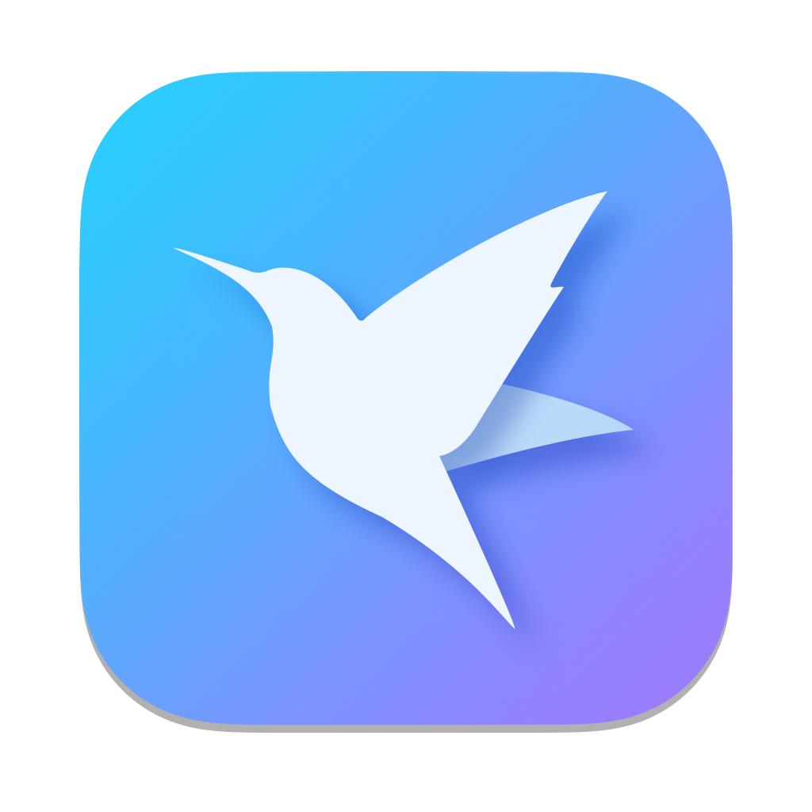

Menu bar only
Lives as ⦿ 12m in the menu bar. No Dock icon. No Cmd-Tab presence. ⏸ 12m while paused.

Breaks you can't ignore.
A tiny menu bar app for macOS that runs your work / break cycle and, when the timer hits zero, blacks out every connected display until the break is really over.
Most timers ping. TimeOn covers every pixel on every screen with an unkillable black overlay. Your break stops being optional.
No notifications. No "5 more minutes". One borderless black window per display, above the Dock, the menu bar, the screen saver, and notifications.
Lives as ⦿ 12m in the menu bar. No Dock icon. No Cmd-Tab presence. ⏸ 12m while paused.
Work blocks of 25 / 30 / 45 / 50 / 60 / 75 / 90 / 120 min. Breaks of 1 / 5 / 10 / 15 / 20 / 30 / 45 min.
One borderless NSWindow per NSScreen at kCGMaximumWindowLevelKey. Rebuilt on display changes, wake, screensaver and Space switches.
Pause preserves the exact remaining time to the second. The menu bar icon switches to ⏸ so you know.
Pick any running app from the system. If it's in the foreground when a break would trigger, the break is skipped and a fresh work cycle starts.
A one-tap 10-second break to verify the blocker works on your hardware before relying on it.
Drawn manually with TimelineView(.animation) at 60 fps. The bar grows continuously instead of jumping every second.
Show or hide the Skip button from settings. Off by default if you want zero outs.
A break overlay you can dismiss isn't a break. TimeOn keeps the curtain down.
keyDown, performKeyEquivalent and cancelOperation (Esc) are all absorbed.macOS 26.3 or later. Universal binary. Signed with an Apple Development identity — first launch needs a right-click → Open to clear Gatekeeper.